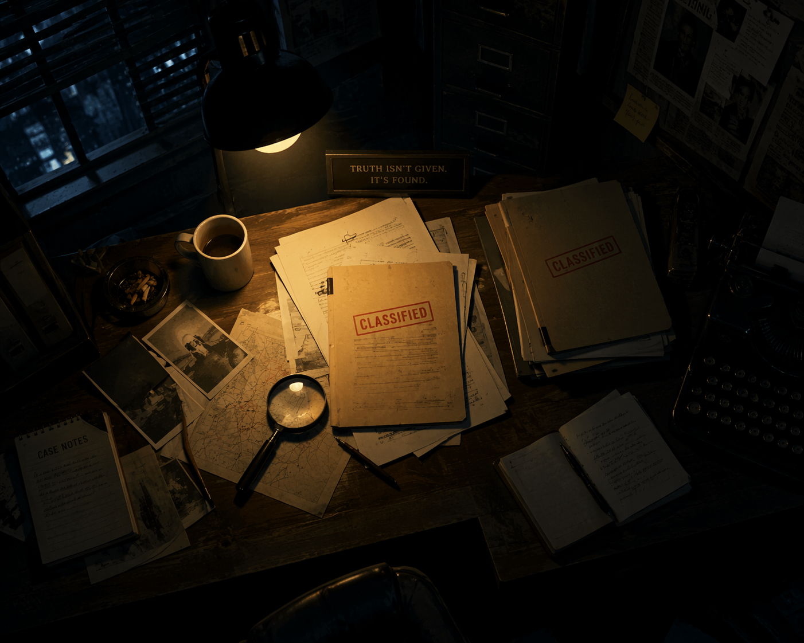
당류 탐정 수사대 모집
식품안전나라 수석 수사관이 남긴 단서를 해독하라!
[속보] 수사관 실종, 남겨진 암호!
어젯밤, 식품 속 당류의 비밀을 파헤치던 수석 수사관이 13개의 수사 파일만 남긴 채 사라졌다. 현장에 남겨진 흔적을 보아 범인은 치밀하게 당류의 함정을 파놓은 것이 분명하다. 이 암호를 모두 해독해야만 수사관이 갇힌 비밀 밀실을 열 수 있다!
현장 접근 권한 확인
보안 구역 입장을 위해 대원 정보를 등록하십시오.
수사대원 신원 등록
현장 파일 열람을 위해 본인의 학번과 이름을 정확히 기입해주시기 바랍니다.
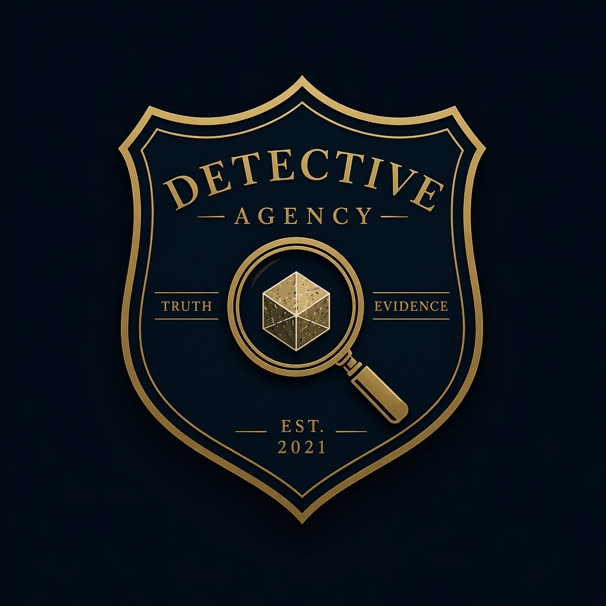
STAGE 1
수사 파일 속 당류 암호 판독
[Q1] 수사 파일 진위 여부 파악
다음 파일 내용의 맞고 틀림(O/X)을 정확히 판별하라.
파일 A: "단당류는 하나의 당으로 이루어진 가장 단순한 당이다."
파일 B: "이당류는 단당류 세 개가 결합한 구조이다."
파일 C: "포도당, 과당, 갈락토스는 모두 단당류에 해당한다."
[Q2] 이당류의 결합 암호
수사 파일의 빈칸을 채워 이당류의 결합 구조를 완성하라.
설탕 = 포도당 + ( ① )
맥아당 = 포도당 + ( ② )
유당 = 포도당 + ( ③ )
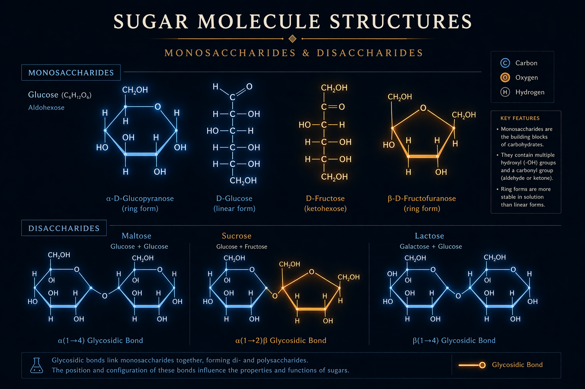
[Q3] 자연당 vs 첨가당 진술서
두 용의자의 진술 중, 교재 내용에 비추어 옳은 진술을 한 사람은 누구인가?
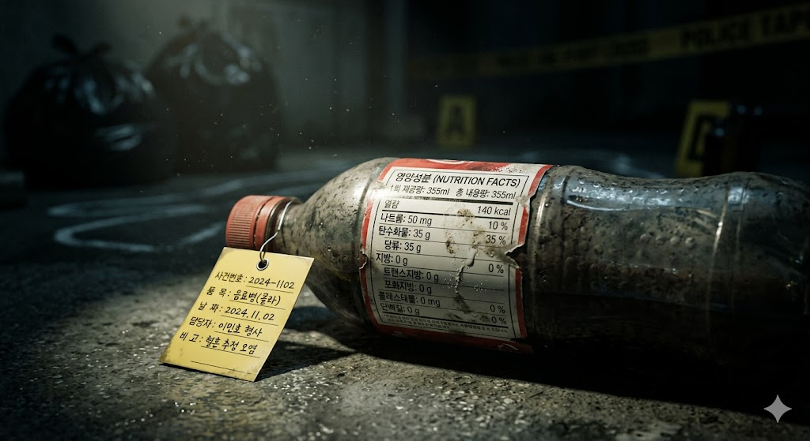
[Q4] 성분표 속 첨가당 색출
다음 목록 중 첨가당에 해당하는 것을 모두 선택하라. (정답 3개)
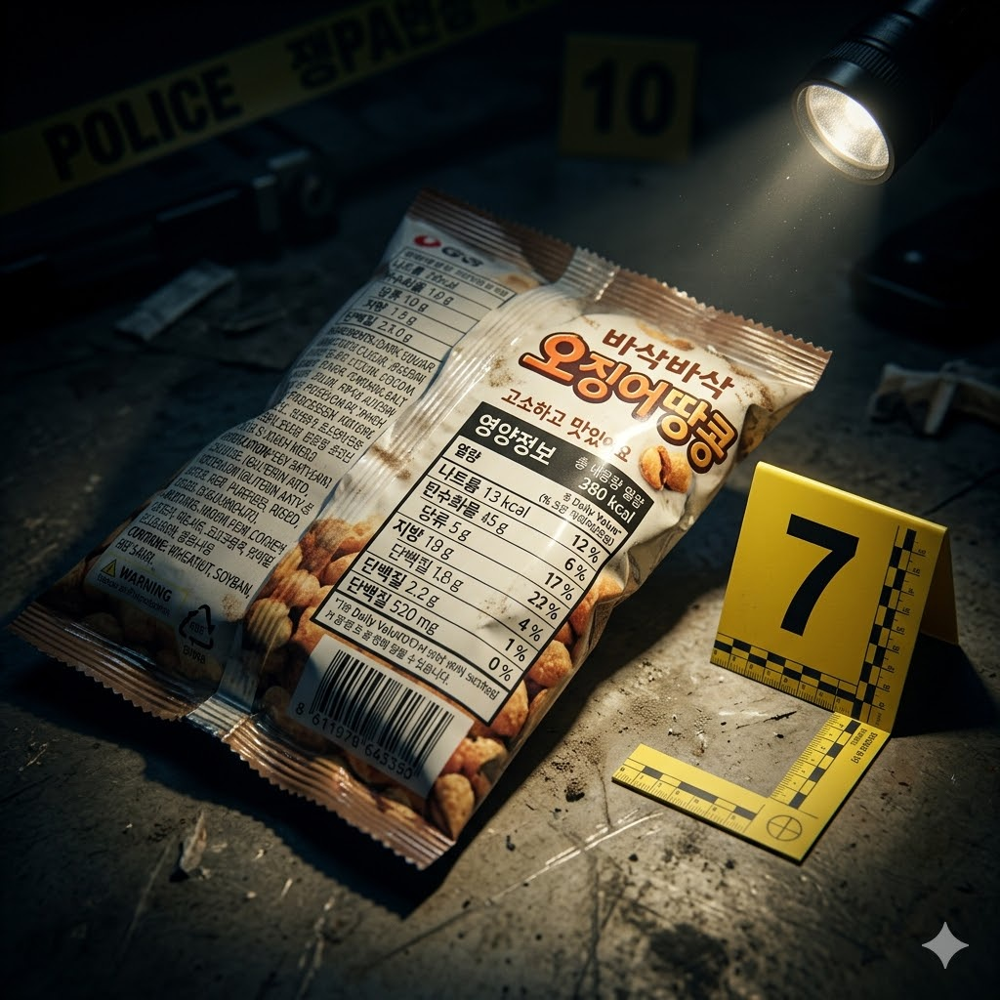
[Q5] 당류의 기능 현장 보고서
보고서 내용의 맞고 틀림(O/X)을 판별하라.
당류는 체내에서 1g당 4kcal의 에너지를 낸다.
포도당은 뇌를 포함한 신경세포의 주 에너지원이다.
과당은 단당류 중 단맛이 가장 약하다.
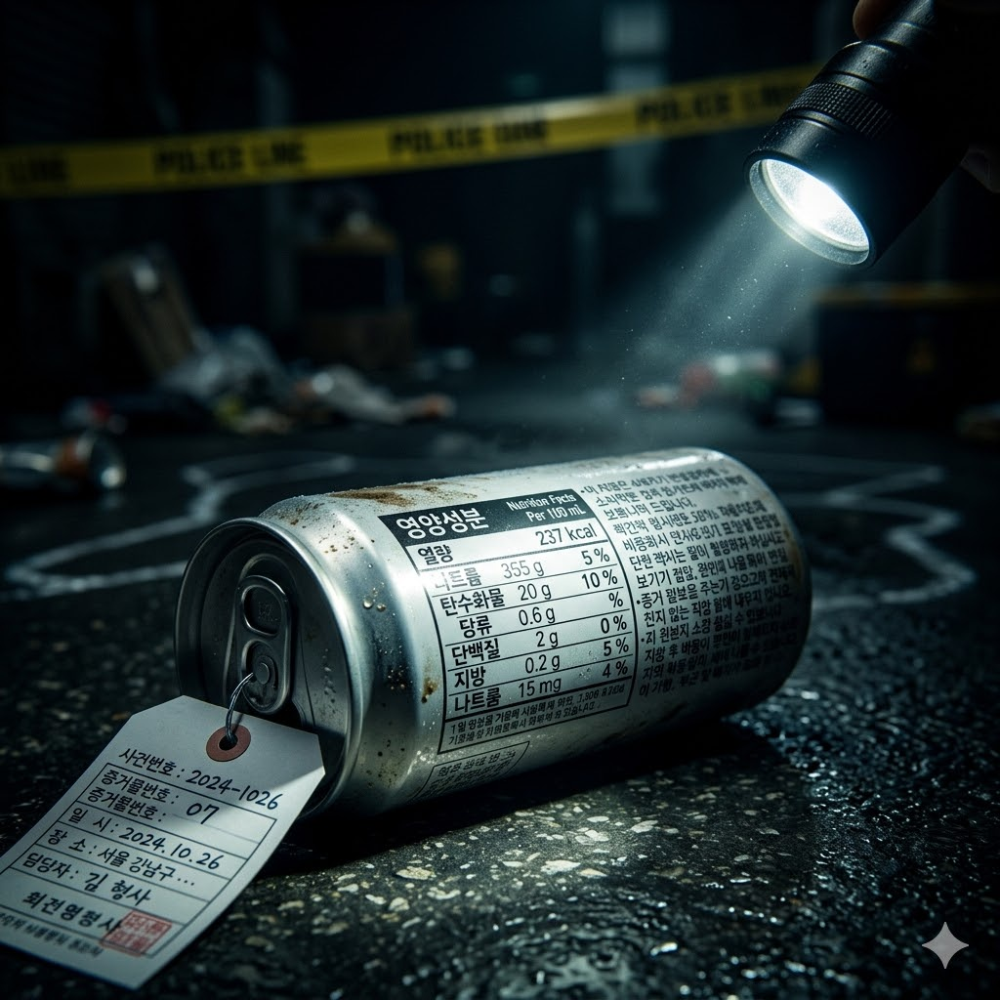
[Q6] 과잉섭취 경고문
당류를 과잉 섭취하면 발생할 수 있는 문제 3가지를 고르시오.
[Q7] 성분표 해독 훈련
성분 목록: [정제수/액상과당/설탕/구연산/향료]
① 이 목록에서 당류에 해당하는 성분은 몇 개인가?
② 두 당류 중 이 음료에 더 많이 들어간 것은?
③ 그 이유로 가장 알맞은 것은?
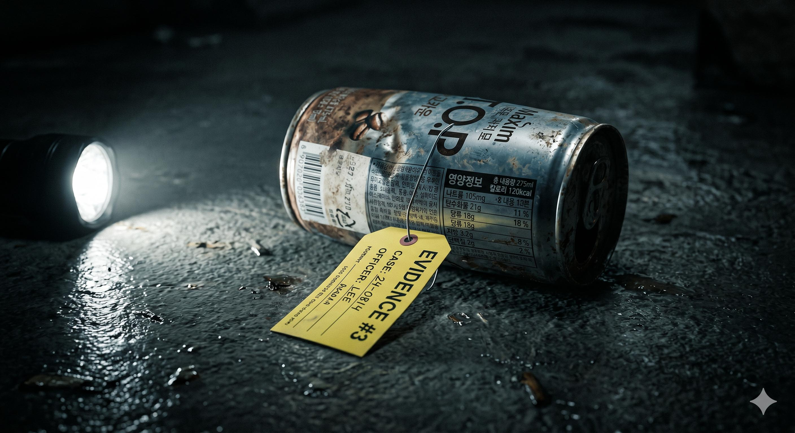
STAGE 2
범행 현장 증거 분석 (계산기 허용)
[Q8] 수사 기록 1호: 대원 민지의 탄산음료
[관찰 기록] 민지 대원은 500mL짜리 탄산음료 한 병을 모두 마신 것으로 확인됨.
[단서 확보] 음료 성분표: 1회 제공량(250mL) 당 당류 27g 표시.
이 보고서를 바탕으로 민지가 섭취한 실제 당류(g), 각설탕 개수, WHO 권장량(25g) 대비 %를 올바르게 연결한 것은?
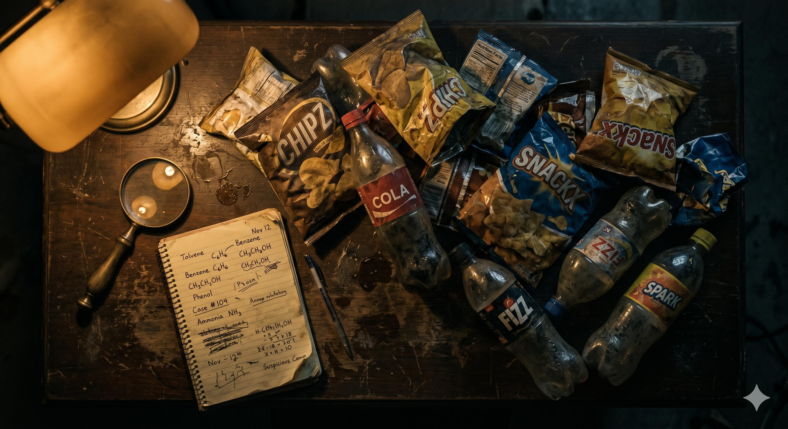
[Q9] 수사 기록 2호: 대원 준호의 과자
[관찰 기록] 준호 대원은 과자 한 봉지(90g)를 다 먹고 "당류 8g이네!"라며 안심함.
[단서 확보] 과자 성분표: 1회 제공량(30g) 당 당류 8g 표시.
① 준호가 실제로 섭취한 당류(g)와 각설탕 개수는?
② 준호의 생각은 무엇이 잘못되었는가?
[Q10] 수사 기록 3호: 대원 소이의 커피음료
[관찰 기록] 소이 대원은 300mL짜리 캔커피 하나를 모두 마심.
[단서 확보] 커피 성분표: 1회 제공량(200mL) 당 당류 18g 표시.
① 이 커피의 실제 섭취 당류(g)는?
② [최종 암호 단서] 세 명의 대원(민지, 준호, 소이)이 범행 현장에서 섭취한 당류의 총합(g)은?
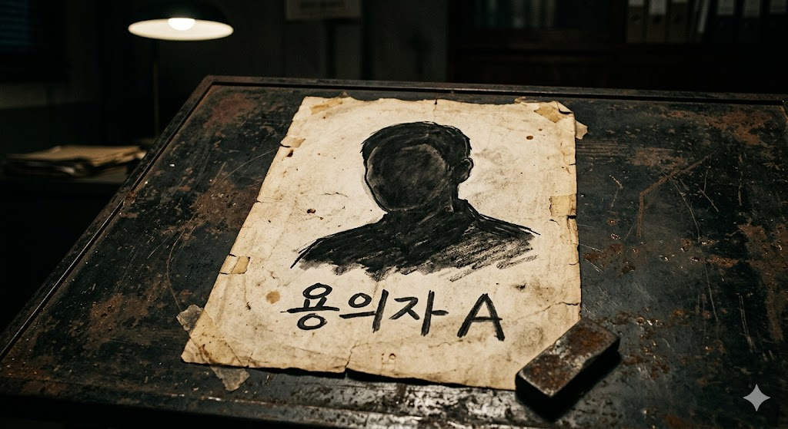
STAGE 3
용의자 심문 및 실생활 판단
[Q11] 용의자 A의 알리바이 검증
"딸기 1팩(7g), 콜라 1컵(11g), 아이스크림 1스쿱(22g)만 먹었으니 아무 문제없어요!"
① 용의자 A가 섭취한 당류의 총합(g)을 숫자로 입력하시오.
② 위 계산 결과를 바탕으로, 이 진술에 대한 올바른 판단을 고르시오.
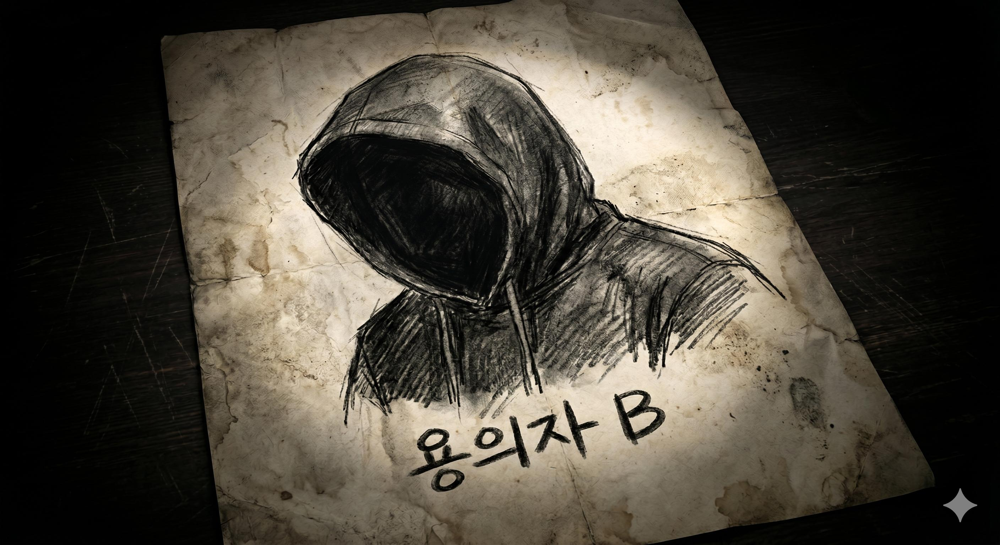
[Q12] 용의자 B의 알리바이 검증
"당류 섭취 제한은 첨가당에만 해당해요. 과일 속 자연당은 얼마든지 먹어도 기준 초과가 아니에요."
이 진술이 맞는지 교재(p.57) 근거로 검증한 내용 중 올바른 것은?
[Q13] 용의자 C의 마트 행동 분석
케첩 A(당류 24g)와 1/2 케첩 B(당류 17g) 중 그냥 싼 A를 샀다는 용의자 C. (차이 7g)
마트에서 식품 구매 시 당류를 줄이는 올바른 방법 2가지를 고르시오.
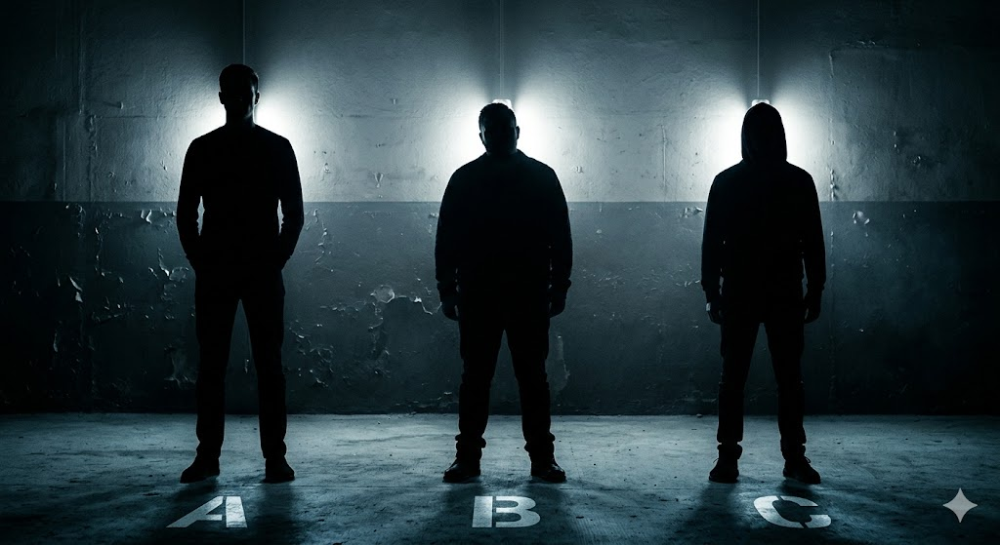
[최종 관문] 수사관이 갇힌 비밀 밀실
앞서 [Q10]에서 계산한 세 명의 대원이 섭취한 당류의 총합(g) 숫자가 밀실 전자 도어락의 비밀번호다!
수사관 구출 성공!
[특보] 실종 수사관 극적 구조, 사건의 전말은?
굳게 잠겨있던 밀실의 문이 열리자, 안에는 실종되었던 식품안전나라 수석 수사관이 무사히 발견되었다! 수사관은 숨을 돌리며 충격적인 진실을 털어놓았다.
"나를 가둔 범인은 바로... 우리 일상 곳곳에 숨어있던 '당류 과잉 섭취의 유혹'이었습니다. 여러분이 1회 제공량의 함정을 밝혀내고 영양성분표를 해독해준 덕분에 이 환상에서 빠져나올 수 있었습니다!"
탐정 수사대원들의 눈부신 활약으로 당류의 진실이 세상에 밝혀지며 사건은 완벽하게 종결되었다.
MISSION
SUCCESS
사건 종결! 방탈출이 완료되었습니다.
수사 일지 최종 제출
함께 활동한 조원들의 이름과 오늘 활동을 마친 소감을 각각 작성해주세요.